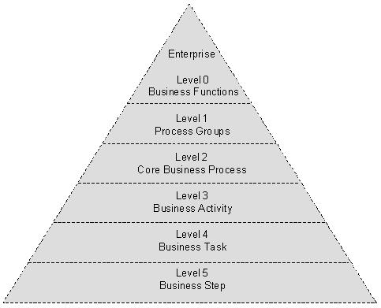
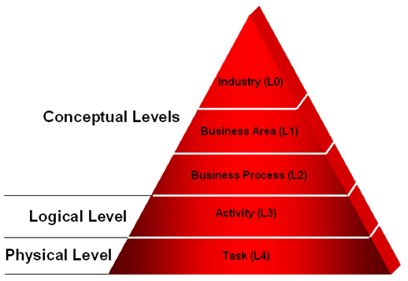
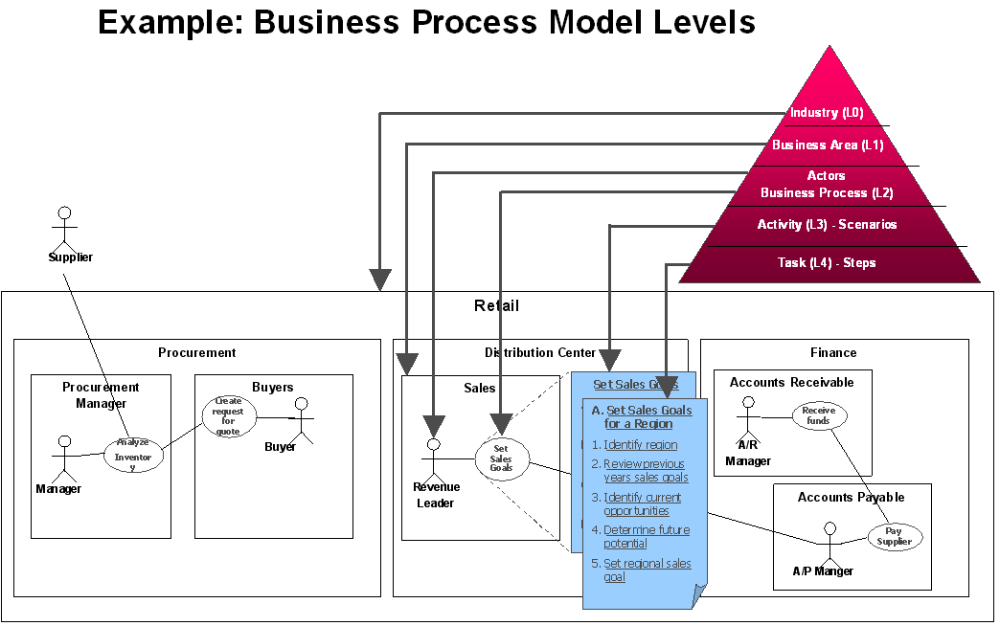
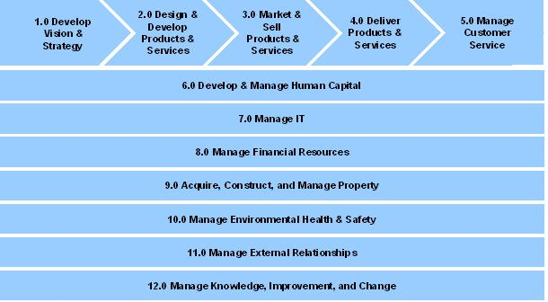
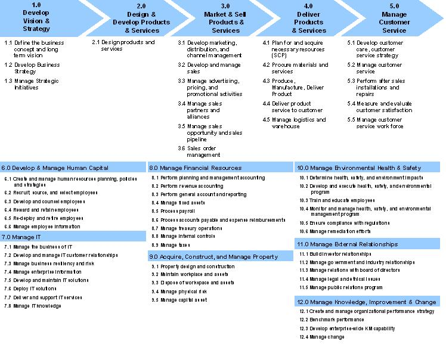
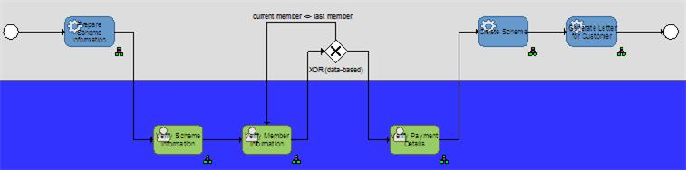
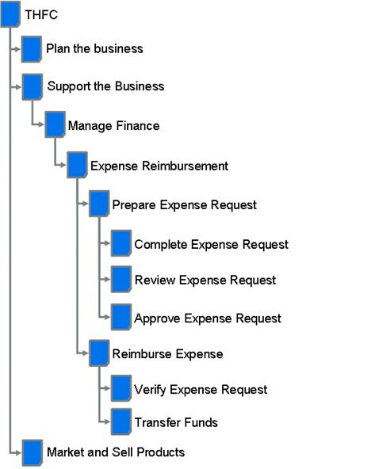
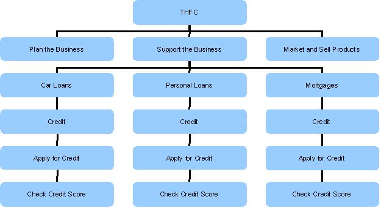
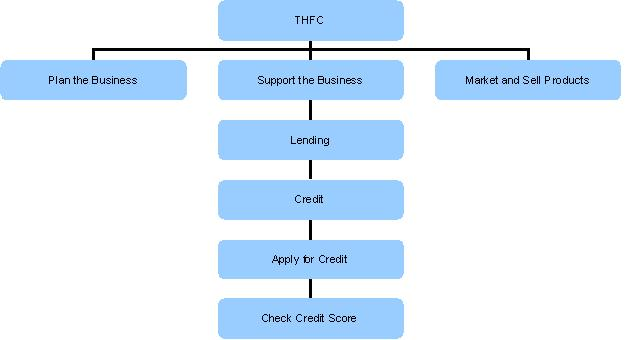

OUM |
Technique Overview |
||
Method Navigation |
Current Page Navigation |
||
|
|
||||||||
The purpose of this technique is to assist in breaking down the enterprise functionally and modeling the functions or business processes. This technique also describes the different levels of business process models.
Important Note: The choice of business process or purely functional modeling (such as using UML and use case descriptions) is only relevant at a relatively low level of detail. At a high level, both functional and process modeling use the same techniques for breaking down the enterprise functions. This is the technique that is described in this document.
Function or Process Model - The Function or Process Model is the highest level model of the business functions or processes within an enterprise. At this level, the same technique can be used, independent of whether you will plan to use functional modeling or process modeling for the lower levels.
No. |
Step | Component | Component Description |
|---|---|---|---|
1 |
Determine functional or business process levels. | Functional/Business Process Levels | There are multiple possible representations of the different levels a process or Function Model can have. The functional/business process levels describe the number of levels that you will use in the enterprise, and what each level represents. |
2 |
Determine modeling techniques. | Modeling Techniques | The Modeling Techniques describe what kind of techniques should be used to model the different functional/business process levels. Most often, different techniques will be used to model the higher and the lower levels. |
3 |
Determine enterprise modeling notations. | Enterprise Modeling Notations | The Enterprise Modeling Notations describe the modeling notations that should be used for the different Modeling Techniques used in the enterprise. |
4 |
Determine the upper level Function or Process Models. | Upper Level Functional or Process Models | The Upper Level Function or Process Models are the actual models for the enterprise, in level 0 and 1 (according to pyramid B). |
5 |
Link enterprise requirements to functions/processes. | N/A | If requirements are maintained at enterprise level, you should use the Enterprise Function Model or Process Model and tie the requirements to the appropriate location in the model. |
The functional analysis required for functional modeling should first concentrate on defining the different functional levels (also called business process levels in the context of business process modeling) in the enterprise or within the scope of the engagement. These levels are often represented as a pyramid, although the actual definition of the levels varies. As a result, the first step of functional or process analysis is to define the levels. In functional modeling, the pyramid is called an Enterprise Function Model, whereas in business process modeling it is called and Enterprise Process Model.
Two slightly different representations are shown here. Both are equally valid and can be used interchangeably but which one to use must be decided for the enterprise once and for all.
 |
 |
Pyramid Model A |
Pyramid Model B |
| Level | Description | Pyramid A | Pyramid B |
|---|---|---|---|
Enterprise Level |
The enterprise or top-level scoping boundary, always sits at the top. Each level defined underneath will increase in detail with respect to functional detail. This is the top level at which we model the business shows the inputs and outputs of the enterprise as a whole, and is created as part of the Enterprise Business Context Diagram (BA.045) in Envision. For the system, we develop the System Context Diagram (RD.005), which also is a Level 0 view but in the context of the system to be developed. It shows the inputs and outputs of the system as a whole, including the actors responsible for the inputs, and those who receive the output. |
Enterprise | Level 0: Industry |
Business Function / Enterprise Business Model Level |
At this level, the models are at their highest level, showing the business functions of the enterprise, and the highest level of the enterprise business flows. These functions define the customer’s business operations within the scope of your assignment. They are usually very similar within an industry. These functions are normally only defined with a high-level description and sometimes a few steps at the highest level. Typical examples at this level are:
|
Level 0: Business Functions | Level 1: Business Area |
Business Process Level |
This level shows how the enterprise performs each of the level 1 functions, how it operates. At this level, a business will usually differentiate itself from competitors in the same industry. This level includes defining the roles and high-level functions performed by the process. Understand that it is not always necessary to have more than one child for each parent. This single child relationship between level 1 and 2 may be common initially. Some examples of processes are:
|
Level 1: Process Groups Level 2: Core Business Process |
Level 2: Business Process |
Activity, Task, Procedural Process Level |
At this level, you show how a business processes is performed and break it down into corresponding business activities, tasks or procedural processes. Business activities are the activities performed as part of a business process that may yet be broken down across several tasks. (Think transaction, rather than method here, where the transaction may be executed, as a unit, over several actors). Tasks are typically performed by a single actor (system or manual), but may involve many steps. Tasks are normally sub-components of activities. Procedural processes are more detailed versions of the higher level processes, including with various scenarios such as the exceptional flows. Procedural processes typically are completed within one sitting; that is when started, they should either be fully completed (with success or failure), or the procedure must be aborted completely. Example activities for the Expense Reimbursement business process:
Use case analysis is a great way to represent nodes in this level when taking a purely functional approach, otherwise a business process can be modeled using the business process modeling notation (BPMN). |
Level 3: Business Activity Level 4: Business Task |
Level 3: Procedural |
Step Level |
This level breaks down a business task or procedural process, into finer grained steps. This is the lowest level of detail necessary for functional modeling or business process modeling. This is typically not done as part of the Future Process Model (RD.011), but is rather described as the scenarios in the Use Case Specification (RA.024) . Example steps for Verify Expense Request include:
|
Level 5: Business Step | Level 4: Steps |
The following picture represents the levels based on Pyramid Model B:

To determine an improved future process, begin by working with business analysts and end users analyzing an “as-Is” process and capturing the issues and challenges facing this process, i.e., delays, disconnects, etc. A business process can be decomposed into several sub-processes, which have their own attributes, but also contribute to achieving the goal of the super-process. The analysis of business processes typically includes the mapping of processes and sub-processes down to activity level.
It is often easier to first model the as-is process (if not already available), before thinking about the improvements.
You could also start with doing a functional analysis of the enterprise in levels similar to the way it is described here. For each level, you could use a different modeling approach.
For example a Value-Added Chain Diagram (VACD) is typically used for levels up to business process (level 2). Other modeling approaches, such as BPMN (Business Process Modeling Notation) are better to use for modeling the level 3 and below. Alternatively, you could use UML activity diagrams.
VACD (Value-Added Chain Diagrams) is a less formal approach as it has a rather informal notation standard that allows for deviations from “text-book” notation and inclusion of non-standardized symbols. BPMN (Business Process Modeling Notation) is standardized, as is UML activity diagramming. Because of its informal nature, VACD might be easier for business people to understand but tends to be less precise and as a result harder to map on analysis and design models.
Below is an example of an Enterprise Business Process Model (aka Business Function Model) using value-chain diagram based on the APQC Process Classification FrameworkSM (PCF)28:

Below is an example of the same diagram, detailed with business process groups:

To model the lower level business processes, you may choose to use BPMN, UML activity diagrams, or some other notation.
BPMN is formalized to a level where there is a clear mapping to BPEL (Business Execution Process Language). For example, a tool such as the Oracle BPA Suite can do a mapping from BPMN to BPEL automatically (to some extent). However, the customer may already have standardized on a specific modeling approach. If so, consider using that approach in that it is well known to the customer.
In case of BPMN or UML activity diagrams, the diagram shows the events (initial state), the steps and decision points as an actor performs them, and their sequence, by drawing flows between pairs of activities or between an activity and a decision point or join. When there are decision points that split a process into more directions, first identify the main flow before going into all the exceptions routes.
An example of BPMN business process model with horizontal swimlanes is shown below:

A Function Model showing all the levels is usually represented as a tree. More details are found in the next section
Even when you have determined the modeling techniques that you will use, there may be different notations that may be used for the different type of models. You may choose to use standard notations, or the customer may have their own notations that should be used. Having decided on standard notations across the enterprise for the different model types, makes it easier to reuse models between projects whenever that would be appropriate.
As an example, for the Function Model, you may also choose different notations. The example Function Model below provides a high-level Function Model (with little detail) for the THFC Corporation. The scope of the Function Model, in general, will match the business scope defined in the Business Scope (BA.012) or may cover the whole enterprise, as shown in the following tree, based on the APQC Process Classification FrameworkSM (PCF)28.

There are a number of finer grained notations that have been used in various industries to represent Function Models. The differences typically lie in the layout of the diagram as well as the format of the nodes. This choice of notation is not critical, as long as the rules identified in the next section are adhered to. In fact, a different representation that is commonly used for Function Models, which is somewhat more scalable than the hierarchical layout is the vertical tree representation (see below).

The illustration above provides a different layout for the THFC Corporation provided earlier. This representation is very useful when tools such as an enterprise repository will be used to either mirror or represent data against this model.
When you have determined the modeling techniques and notations for the upper level models, you are ready to actually model the highest levels of the enterprise. An example is given when the Function Model technique has been chosen.
Function models are trees and as such, the following rules apply to them:
In addition, each level in the Function Model has a specific designation with respect to functional granularity.
The primary goal of the Function Model is to prevent duplicate functions from appearing in separate parts of the Function Model. The following would be an incorrect representation of a Function Model:

The flaw in the Function Model is that the “organization” of the business has been mixed into the model at the third row from the figure above. For instance Car Loans, Personal Loans, and Mortgages, are lines of business within the THFC Corporation, they are not functions of the business. The correct function at that level would be “lending”. This would result in the following model:

When getting down to the requirements analysis (refer to the Enterprise Requirements Management technique), groups of requirements can be attached at level 2 (Business Process) and below. Requirements encountered at a parent node need to be interpreted that they apply at the child levels (and grand child, and so on) and below. This is an especially useful method for scoping or establishing a hierarchy of requirements which can be disseminated into service candidates as well as ensuring complete coverage. It is also a useful way to broadcast non-functional requirements (rather than repeating them at every node in every child level). Further, this strategy can be used to document higher granular requirements prior to breaking them down in to finer grained requirements.
A Function Model that prevents duplication of enterprise functionality across the model is one of the aspects that make it useful for application within SOA deployments. One of the major issues that the SOA strategy attempts to overcome is the duplication of critical business function across systems. In many cases this happens simply because there is a lack of visibility with respect to requirements and existing IT business function. In other cases the inter-departmental rivalries/differences are the cause. A Function Model that eliminates functional duplication and is scalable with respect to enterprise class data sizes is an ideal fit for supporting the service identification and discovery aspects of an SOA from a functional point of view.
There are no templates available to assist with this technique.
This technique is recommended for use in the following OUM tasks:
| Task | Usage |
|---|---|
| Review this technique as input into this task for a SOA Modeling Planning engagement. | |
| Review this technique as input into this task for a SOA Modeling Planning engagement. | |
| Use this technique for guidance on how what kind of levels should be used for Function or Process modeling, what kind of notations may be used and how the upper level models should be made. | |
| Use this technique for guidance on what kind of levels, and techniques should be used for this type of model. | |
| Use this technique for guidance on what kind of levels, and techniques should be used for this type of model. |
Use the following criteria to check the quality of this technique:

Copyright © 2006, 2016, Oracle and/or its affiliates. All rights reserved.